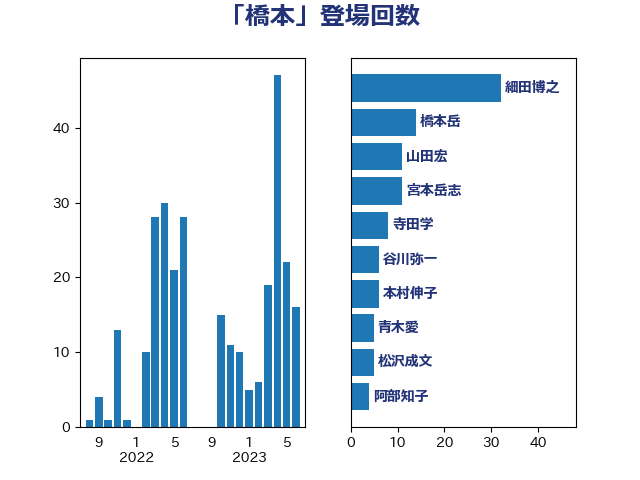

単語「橋本」

| 細田博之 | 自由民主党 | 32 回 |
| 橋本岳 | 自由民主党 | 14 回 |
| 山田宏 | 自由民主党 | 11 回 |
| 宮本岳志 | 日本共産党 | 11 回 |
| 寺田学 | 立憲民主党 | 8 回 |
| 谷川弥一 | 自由民主党 | 6 回 |
| 本村伸子 | 日本共産党 | 6 回 |
| 青木愛 | 立憲民主党 | 5 回 |
| 松沢成文 | 日本維新の会 | 5 回 |
| 阿部知子 | 立憲民主党 | 4 回 |
| 山東昭子 | 自由民主党 | 4 回 |
| 山本香苗 | 公明党 | 4 回 |
| 山口俊一 | 自由民主党 | 4 回 |
| 吉田はるみ | 立憲民主党 | 4 回 |
| 上田清司 | 国民民主党 | 4 回 |
| 鶴保庸介 | 自由民主党 | 3 回 |
| 藤原崇 | 自由民主党 | 3 回 |
| 自見はなこ | 自由民主党 | 3 回 |
| 米山隆一 | 立憲民主党 | 3 回 |
| 福島伸享 | 無所属 | 3 回 |
| 猪口邦子 | 自由民主党 | 3 回 |
| 沢田良 | 日本維新の会 | 3 回 |
| 森英介 | 自由民主党 | 3 回 |
| 岡田克也 | 立憲民主党 | 3 回 |
| 古賀友一郎 | 自由民主党 | 3 回 |
| 伊藤忠彦 | 自由民主党 | 3 回 |
| 仁木博文 | 無所属 | 3 回 |
| 三ッ林裕巳 | 自由民主党 | 3 回 |
| 高良鉄美 | 無所属 | 2 回 |
| 阿部弘樹 | 日本維新の会 | 2 回 |
| 西銘恒三郎 | 自由民主党 | 2 回 |
| 福田昭夫 | 立憲民主党 | 2 回 |
| 石川大我 | 立憲民主党 | 2 回 |
| 田村まみ | 国民民主党 | 2 回 |
| 牧山ひろえ | 立憲民主党 | 2 回 |
| 湯原俊二 | 立憲民主党 | 2 回 |
| 林芳正 | 自由民主党 | 2 回 |
| 早稲田ゆき | 立憲民主党 | 2 回 |
| 岡田直樹 | 自由民主党 | 2 回 |
| 山田勝彦 | 立憲民主党 | 2 回 |
| 小宮山泰子 | 立憲民主党 | 2 回 |
| 宮本徹 | 日本共産党 | 2 回 |
| 大野敬太郎 | 自由民主党 | 2 回 |
| 大口善徳 | 公明党 | 2 回 |
| 國場幸之助 | 自由民主党 | 2 回 |
| 和田義明 | 自由民主党 | 2 回 |
| 伊佐進一 | 公明党 | 2 回 |
| 中島克仁 | 立憲民主党 | 2 回 |
| たがや亮 | れいわ新選組 | 2 回 |
| 高橋千鶴子 | 日本共産党 | 1 回 |
| 高橋克法 | 自由民主党 | 1 回 |
| 阿部司 | 日本維新の会 | 1 回 |
| 金子恵美 | 立憲民主党 | 1 回 |
| 野間健 | 立憲民主党 | 1 回 |
| 遠藤良太 | 日本維新の会 | 1 回 |
| 赤嶺政賢 | 日本共産党 | 1 回 |
| 藤丸敏 | 自由民主党 | 1 回 |
| 船橋利実 | 自由民主党 | 1 回 |
| 臼井正一 | 自由民主党 | 1 回 |
| 石田昌宏 | 自由民主党 | 1 回 |
| 石橋通宏 | 立憲民主党 | 1 回 |
| 田村憲久 | 自由民主党 | 1 回 |
| 田島麻衣子 | 立憲民主党 | 1 回 |
| 田中健 | 国民民主党 | 1 回 |
| 熊谷裕人 | 立憲民主党 | 1 回 |
| 滝沢求 | 自由民主党 | 1 回 |
| 海江田万里 | 立憲民主党 | 1 回 |
| 河野太郎 | 自由民主党 | 1 回 |
| 江田憲司 | 立憲民主党 | 1 回 |
| 永岡桂子 | 自由民主党 | 1 回 |
| 森屋隆 | 立憲民主党 | 1 回 |
| 梅村聡 | 日本維新の会 | 1 回 |
| 根本匠 | 自由民主党 | 1 回 |
| 杉尾秀哉 | 立憲民主党 | 1 回 |
| 本庄知史 | 立憲民主党 | 1 回 |
| 打越さく良 | 立憲民主党 | 1 回 |
| 徳永エリ | 立憲民主党 | 1 回 |
| 平山佐知子 | 無所属 | 1 回 |
| 岡本あき子 | 立憲民主党 | 1 回 |
| 山本太郎 | れいわ新選組 | 1 回 |
| 尾辻秀久 | 無所属 | 1 回 |
| 尾身朝子 | 自由民主党 | 1 回 |
| 尾崎正直 | 自由民主党 | 1 回 |
| 小倉將信 | 自由民主党 | 1 回 |
| 宮崎勝 | 公明党 | 1 回 |
| 大串正樹 | 自由民主党 | 1 回 |
| 塩崎彰久 | 自由民主党 | 1 回 |
| 吉田統彦 | 立憲民主党 | 1 回 |
| 古賀篤 | 自由民主党 | 1 回 |
| 原口一博 | 立憲民主党 | 1 回 |
| 北側一雄 | 公明党 | 1 回 |
| 倉林明子 | 日本共産党 | 1 回 |
| 伊波洋一 | 無所属 | 1 回 |
| 今枝宗一郎 | 自由民主党 | 1 回 |
| 仁比聡平 | 日本共産党 | 1 回 |
| 上川陽子 | 自由民主党 | 1 回 |